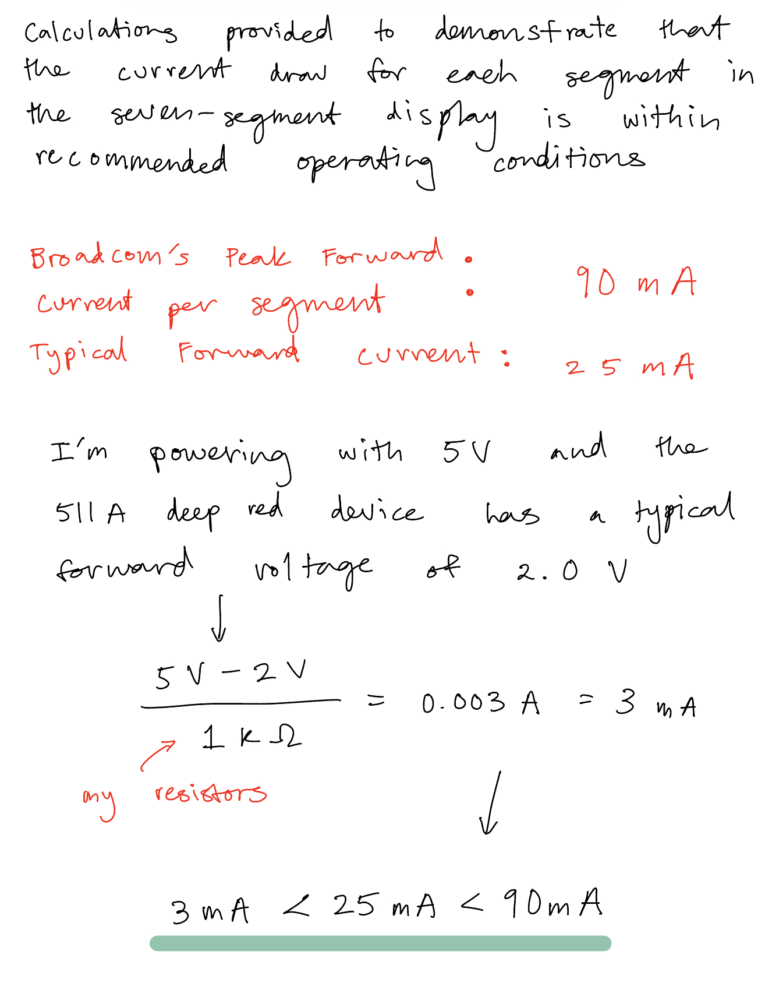
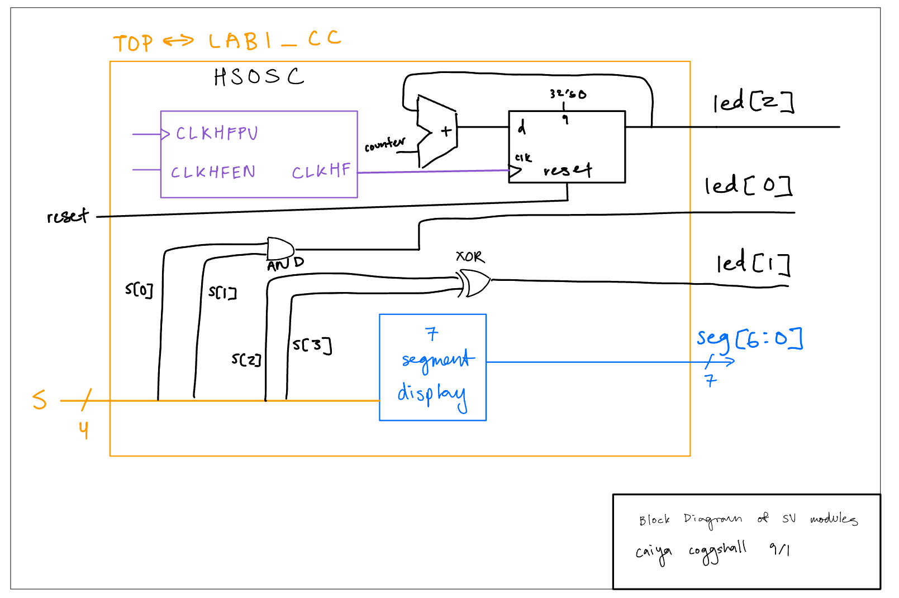
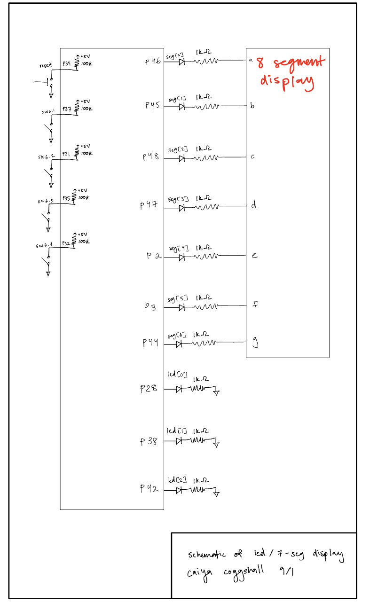
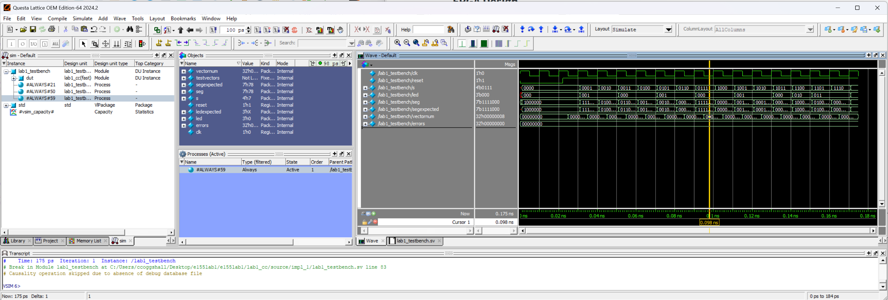
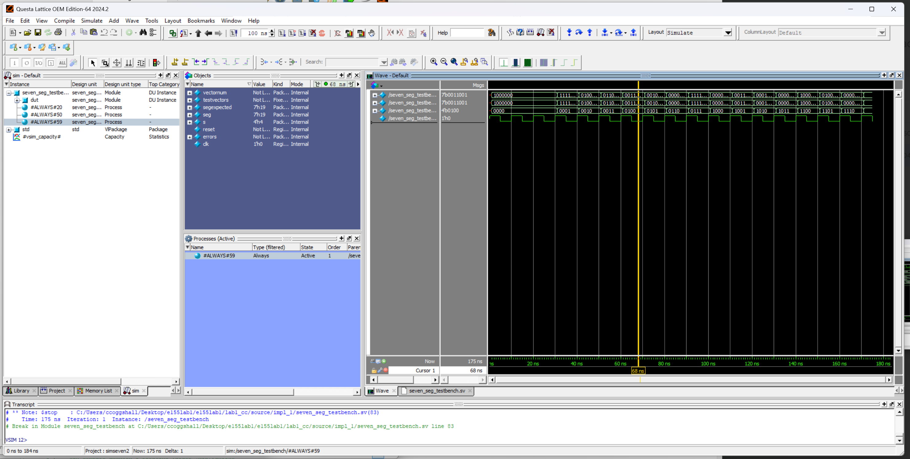
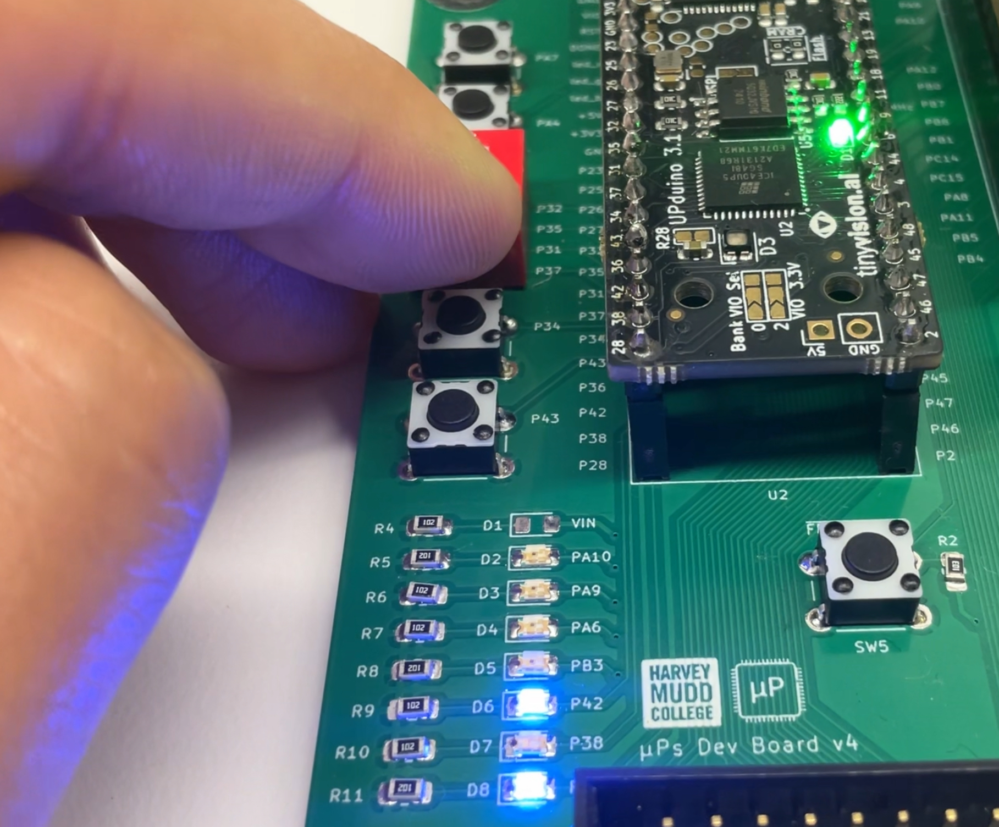
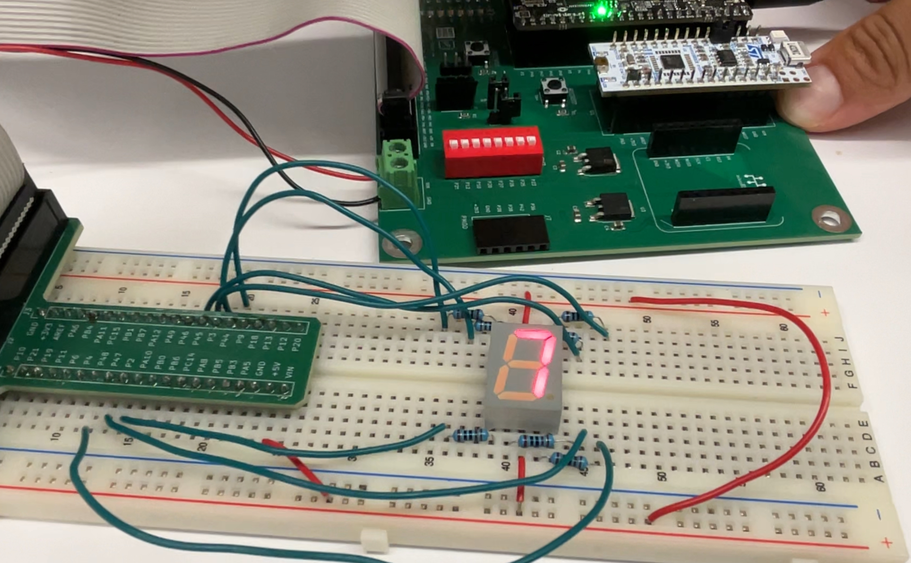
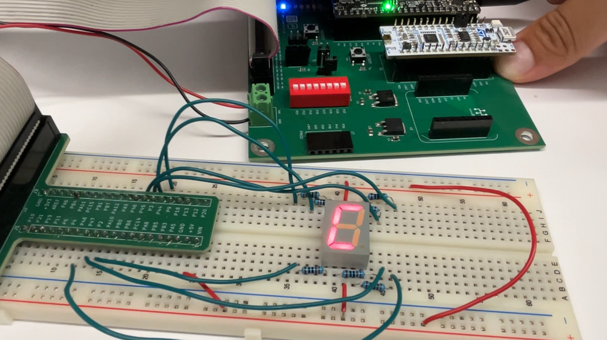
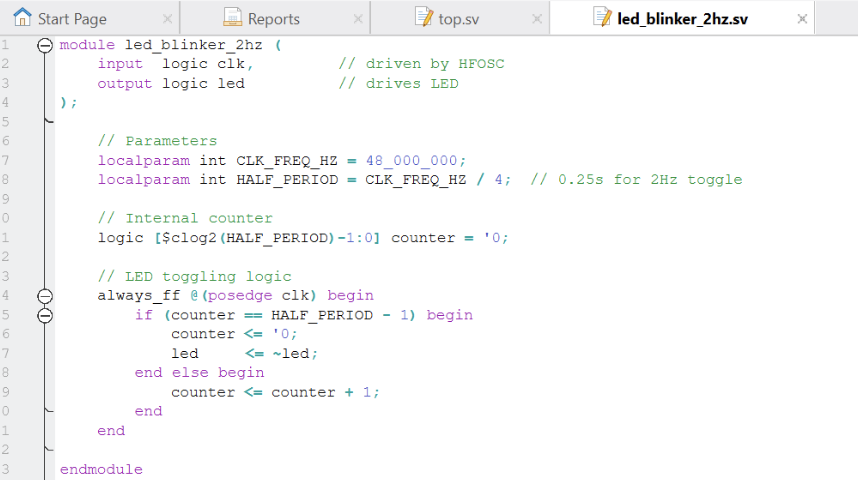
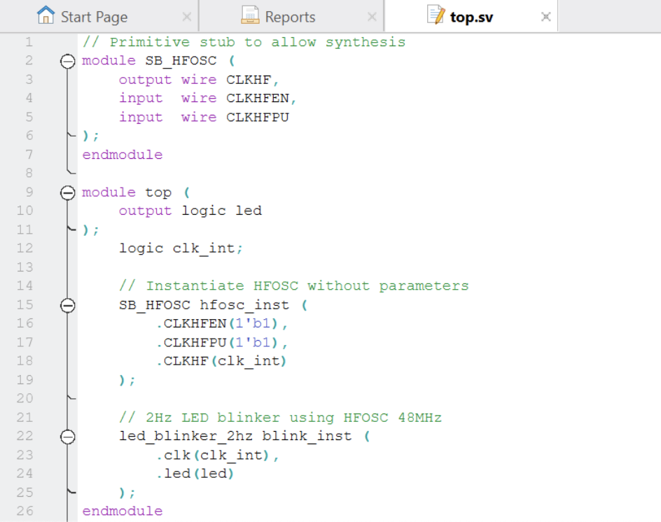

Lab 1 : FPGA and MCU Setup and Testing
Introduction
In this lab, we soldered a full development board and implemented a design on the FPGA to demonstrate the functionality of the on-board high-speed oscillator by blinking the on-board LEDs. The high speed oscillator was configured at a frequency of 48 MHz and divided down using a counter to achieve a blinking frequency of ~2.4 Hz. Additionally I wired a 7-segment display to my FPGA board and was able to display all sixteen hexadecimal digits using the red segments.
Project Details
The development board was built using many SMT and THT parts which helped revive some useful soldering skills and practice using soldering paste to secure surface mount components.
Powering and testing the board involved confirming everything was soldered as intended. I checked the LEDs could blink when programmed at 1 Hz as well as how much power each component was receiving. However, actually connecting the Lattice Radiant software proved difficult as the MCU wasn’t able to detect the J-link at all and the FPGA required a lot of “witchcraft” in order to be read.
After thoroughly testing the board I dusted off my digital design chops and wrote some verilog code in my top module to operate the LEDs on the board in relation to the switches and clocks. The relationship between the inputs and LEDs was given as the following:
| Signal Name | Signal Type | Description |
|---|---|---|
| clk | input | 48 MHz clock on FPGA |
| s[3:0] | input | the four DIP switches (on the board, SW6) |
| led[2:0] | output | 3 LEDs (you may use the on-board LEDs) |
| seg[6:0] | output | the segments of a common-anode 7-segment display |
The following table is the relationship between LEDs that was given to us:
| S1 | S0 | led[0] |
|---|---|---|
| 0 | 0 | OFF |
| 0 | 1 | ON |
| 1 | 0 | ON |
| 1 | 1 | OFF |
| S1 | S0 | led[1] |
|---|---|---|
| 0 | 0 | OFF |
| 0 | 1 | OFF |
| 1 | 0 | OFF |
| 1 | 1 | ON |
while led[2] wasn’t based on a truth table and instead needed to blink at 2.4 Hz.
In addition to the LEDs the 7-segment display needed to display a single hexdecimal digit from 0x0 through 0xF. This was done by programming each segment of the display to be controlled by a 4 bit binary number that could be set via one of the switches.
Design and Testing Methodology
LED Design
Since the code for the LEDs was pretty simple I decided to combine those with my top down module. To start, I looked at the truth tables for led[0] and led[1] and realized that it was simply a XOR and AND gate, respectively. These can be written with simple verilog logic lines. From there, I started by approaching the 2.4 Hz led[2] by writing some expensive mod (%) logic but quickly abandoned that for a more intuitive answer. I could calculate the value that I wanted to reset the led at as:
\[ ((1/2.4 \text{ Hz}) * 48000000 \text{ Hz/count})/2 = 10000000 \text{ counts} \]
Where the 48 MHz clk is per 1 cycle. So dividing it by the 2.4 Hz frequency for led[2], I can determine the amount of cycles to toggle led[2] to represent a 2.4 Hz signal. This whole count is then divided by 2 because I want this cycle to flash the led which would mean turning it on and then turning it off. So I turn it on for half of the cycle count (i.e at 10,000,000 counts) and off for the other half. This was confirmed by probing that pin on an oscilloscope.
Seven Segment Design
For the seven segment design I knew we were receiving a 4 bit binary number s[3:0] and needed to convert that to different segments of the 7-segment display. The 7-segment display is common anode (active low wired) so that meant that when I wrote out a long list of what each number and letter would illuminate and which corresponding segments needed to be triggered, 0 indicated ON. Once I had my code for that I wrote some case statement code to account for all possible number/letter inputs and what their corresponding seg[6:0] seven bit sequence would be.
I later wired it on a breadboard to GPIO pins and did a calculation as seen below (in Figure 1) to verify the current draw for the segments was within recommended operating conditions:

Technical Documentations
All the code for the project can be found in the following Github repository.
Block Diagram

The block diagram in Figure 2 demonstrates the overall architecture of the design. I created two models, one being my top-level model with my led code and my 7-segment display module too.
Schematic

The schematic as seen in Figure 3 shows the layout of the circuit design. It has internal 100 kΩ pullup resistors to make sure the active low reset pin doesn’t float and then the output LED was connected to a current limiting resistor to make sure the output current didn’t exceed the max output current of the FPGA I/O pins. Refer to Figure 1.
Results and Discussion
After finally coding everything and uploading,debugging and building, my board successfully met all specifications!
That is, I was able to produce the correct waveforms for both my top level module testbench (as seen in Figure 4)and my seven segment display test bench (Figure 5).


Everything passed the testvectors showing that the code simulated correctly!
Additionally I was able to record images of some of the LED logic (Figure 6) as well as hexadecimal digits 0x7 and 0xC from the seven segment display (Figure 7 & 8).



Conclusion
To conclude, I successfully soldered a whole development board, blinked an led at 2.4 Hz, designed other leds to go off according to gate logic, and coded a seven-segment display to display sixteen hexadecimal digits.
I spent a total of ~ 46 hours working on this lab. I wish that number was not my reality but since I religiously document every work block on google calendar I know its an accurate representation of how long I spent on lab 1. Unfortunately, so many issues just kept popping up with the program that troubleshooting ended up stretching out a while.
AI Prototype Summary
I used ChatGPT 5 Auto as my LLM for this assignment. I then entered in the following prompt:
"Write SystemVerilog HDL to leverage the internal high speed oscillator in the Lattice UP5K FPGA and blink an LED at 2 Hz. Take full advantage of SystemVerilog syntax, for example, using logic instead of wire and reg."It started by writing two modules, one for blinking the led at 2 Hz and the other as my top-level module. It started having errors of being unable to instantiate the clock or unexpected parameters. After a little back and forth (about 4 tries), Chat GPT 5 was able to finally synthesize.
The toggling logic it produced for the led_blinker_2hz module was intuitive to understand and similar to how I set up my code. The top-level was also decently simplistic and used the basics of the clock to call on the other modules. The system verilog code photos can be found in Figures 9 and 10.


It’s unclear to me whether this code would work past synthesis but the LLM was definitely able to set up a framework for the system verilog code that (if understood) could really help in speeding up hardware engineering work flows.